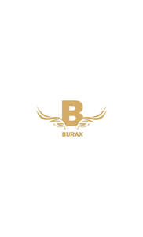

Trade Mark Journal No.2025/010 7 March 2025
UK00004163927 22 February 2025 (8)

- Class 8
- Hairdressing scissors; Scissors; Hair cutting scissors; Sewing scissors; Gardening scissors; Embroidery scissors; Nail scissors; Cuticle scissors; Metal-cutting scissors [tin shears]; Pruning scissors; Poultry scissors; Scissors for children; Scissors for pizzas; Scissors for kitchen use; Scissors (Non-electric -) for wallpaper; Scissors for household use; Needle work scissors; Wick trimmers [scissors]; Wick trimmers being scissors; Shears; Hand-operated hair clippers; Paper shears; Hair clippers; Gardening shears; Household shears; Ikebana shears; Multipurpose shears; Electric hair clippers; Japanese grip scissors [Japanese thread clippers]; Hobby knives [scalpels]; Electric hair cutters; Non-electric hair clippers; Multi-purpose shears; Scissor blades; Cutting pliers [linemans' pliers]; Electric hair crimpers; Hair-removing tweezers; Woolen shears; Electric hair clippers for personal use [hand instruments]; Pinking shears; Hand-operated nail clippers for pets; Hair clippers for babies; Wool shears; Scissor sharpeners (Hand operated -); Blades for shears; Electric hair clippers for animals [hand instruments]; Hair clippers for animals [hand instruments]; Hair clippers for personal use; Trimming knives; Nail nippers [hand tools]; Electric crimping irons for the hair; Electric hair crimper; Pruning shears; Electric hair trimmers; Nail clippers; Nail nippers; Cuticle tweezers; Tweezers; Pocket shears; Hair clippers for personal use, electric and non-electric; Electric hair straighteners; Manicure and pedicure tools; Knife sharpeners [hand tools]; Razors; Electric razors; Blades for electric razors; Non-electric razors; Straight razors; Razor knives; Disposable razors; Shaving blades; Razor blades; Razor strops; Dispensers for razor blades; Japanese razors; Safety razors; Cassettes for razor blades; Razor blade dispensers; Razors, electric or non-electric; Manually-operated razor blade sharpeners; Vibrating blade razors; Safety razor blades; Beard clippers; Safety razor blades (Dispensers for -); Cartridges for razor blades; Non-electric beard trimmers; Electric beard trimmers; Electric and battery-powered hair clippers; Cases for razors; Mustache and beard trimmers; Electric shavers; Beard trimmers; Electric ear hair trimmers; Razor strops [leather strops]; Nail clippers, electric or non-electric; Cartridges containing razor blades; Non-electric eyebrow trimmers; Vibrating blade shavers; Butcher knives; Electric nasal hair trimmers; Electric hair braiders; Hair braiders, electric; Hacksaw blades for hand operated hacksaws; Handsaw blades; Hacksaw blades; Blades for knives; Kitchen knives (Non-electric -); Containers adapted for razor blades; Disposable knives; Razor cases; Cases (Razor -); Sharpening wheels for knives and blades; Uncapping knives, non-electric; Knives; Cases adapted for razors; Multi-tool knives; Butchers' knives (Non-electric -); Knife sharpeners; Sheaths for knives; Blades for hand saws; Knives, forks and spoons; Penknives; Choppers being knives; Blades [weapons]; Grapefruit knives; Electric and non-electric depilatory appliances; Biodegradable knives; Household knives; Screwdrivers, non-electric; Screwdrivers (Non-electric -); Snips; Pliers; Punch pliers [hand tools]; Knife sharpeners [hand operated tools]; Putty knives; Pruning knives; Border shears; Putty knives [hand tools]; Punch pliers; Snips [hand operated tools]; Fingernail clippers; Secateurs; Thin-bladed kitchen knives; Knife sheaths; Pen knives; Wire nippers [hand tools]; Shears [hand operated tools]; Scissor holders; Hand-operated tin snips; Tin snips [hand-operated]; Paring knives; Stencil cutters [hand-operated tools]; Metal cutting saws; Folding knives; Hoop cutters [hand tools]; Knives [hand tools]; Turnip cutters [knives]; Knife bags; Mincing knives [hand tools]; Hacksaw frames for hand operated hacksaws; Miter cutters being hand tools; Grafting knives; Hand-operated cutting tools; Nippers [hand tools]; Wire cutters [hand tools]; Lawn edge trimmers [hand-operated tools]; Caulking cutters [hand tools]; Nail buffers for use in manicure; Nail polishers (Electric -); Nail files; Nail skin treatment trimmers; Nail polishers (Non-electric -); Nail extractors; Extractors (Nail -); Nail buffers; Nail files, non-electric; Nail files, electric; Electric nail files; Nail punches; Electric nail buffers; Nail pullers, hand-operated; Nail extractors, hand-operated; Battery-powered animal nail grinders; Roller head refills for electronic nail files; Electric animal nail grinders; Roller heads for electronic nail files; Dog clippers; Carpenters' pincers [nail pullers]; Electric fingernail polishers; Nail drawers [hand tools]; Nail buffers, electric or non-electric; Non-electric fingernail polishers; Nasal hair trimmers; Manual clippers; Electrically operated hair clippers [hand instruments]; Artificial eyelash tweezers; Cuticle nippers; Screwdriver bits for hand operated screwdrivers; Tongs; Precision screwdrivers (Non-electric -); Wire brushes [hand-operated tools]; Pincers [hand tools]; Pincers being hand tools; Screwdrivers; Locking pliers; Screwdrivers [hand tools]; Tongs [hand tools]; Pincers; Fishing pliers; Miniature screwdrivers (Non-electric -); Tube cutters [hand tools]; Combination pliers; Electrical shavers for removing fuzz from fabric [hand instruments]; Spatulas [hand tools]; Pruners [hand tools].
ABIX DEALS LTD